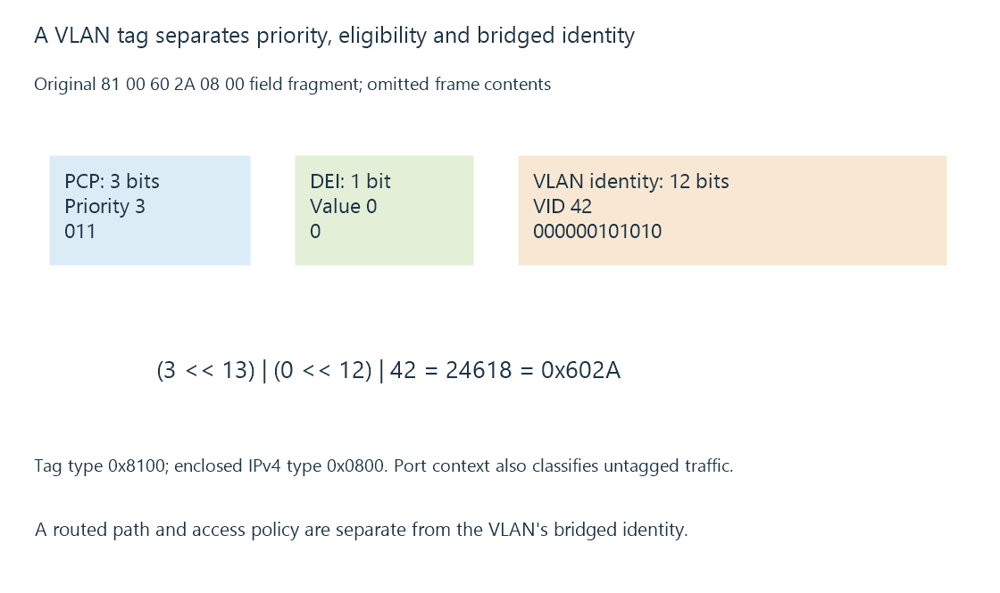

VLANs, tagged links and routed policy
A VLAN identifies a bridged network context through port and tag handling, with routing and policy required for communication between separately defined realms.
A physical switch can carry several separate bridged network contexts. VLANs identify those contexts through port membership and, on appropriate links, frame tags.
The separation is a link-layer relationship. IP prefixes and routed access policy add other decisions.
A tag carries several fields
Use this original 802.1Q-style field fragment:
81 00 60 2A 08 00
Here 81 00 identifies the tag type, 60 2A is the chosen tag-control information and 08 00 is the enclosed IPv4 EtherType.
The tag-control exercise has priority value three, drop-eligibility value zero and VLAN ID forty-two:
{"priority": 3, "dropEligible": 0, "vlanId": 42, "tagControl": 24618}
The calculation is (3 << 13) | (0 << 12) | 42 = 0x602A. VLAN ID occupies twelve bits; priority and drop-eligibility are separate fields.

The fragment omits the rest of the Ethernet frame. It is not an emitted packet or a switch command.
Untagged frames still need a port context
An access-style port can associate untagged traffic with its configured VLAN. A trunk-style link can carry permitted tagged contexts toward another VLAN-aware device.
The port’s handling of untagged traffic and its default/PVID context are configuration facts. Removing a tag does not make the frame belong simultaneously to every bridged network.
Two connected ports can therefore carry different realms while sharing one switch chassis.
VLAN and IP subnet have related but distinct roles
An IP subnet can be assigned to a VLAN-backed realm. The VLAN tag identifies the bridged context; the prefix identifies address membership and route matching.
An original server on VLAN ten with 192.168.50.20/24 and a client on VLAN twenty with 192.168.80.30/24 needs an appropriate routed path between the realms.
Sharing an upstream cable does not create direct same-link address resolution between them.
A router provides another policy boundary
An inter-VLAN router can select and forward the packet toward the server realm. Firewall policy can permit one service while denying other operations.
Guest isolation can use that arrangement. Multicast routing adds membership/scope behavior that ordinary unicast routing does not supply by itself.
A VLAN ID is not a user credential or media permission. The reachable Emby operation still has its account policy.
Retain the tagged and untagged observations
For a missing server path, identify the client’s port/SSID realm, carried tags, allowed trunk contexts, routed destination and return policy.
See Also
- Subnets, CIDR and matching routes
- Guest network isolation and permitted paths
- Multicast membership, routing and local scope
- Quality of service, classification and scheduling